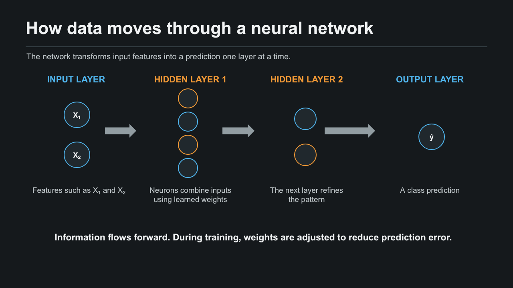

Learning, made tangible.
Each artifact includes the work itself and context about what I set out to learn, how I approached it, and why it matters.
ARTIFACT 01AIML · MACHINE LEARNING
Machine Learning Algorithm Framework
A visual guide to ten machine learning algorithms, organized by learning type and connected to the domains where they are used.
- Objective
- Compare common algorithms and understand how supervised and unsupervised learning differ.
- Process
- Grouped ten methods by learning type, then summarized their domains, real-world uses, and core ideas.
- Tools
- HTML and CSS; GitHub Pages for sharing.
- Value
- Offers a quick reference for choosing and discussing machine learning approaches across data, vision, language, and generative AI.
FRAMEWORK PREVIEW
ARTIFACT 02AIML · NEURAL NETWORKS
Neural Network Components and Results
A visual presentation explaining how data moves through a neural network and comparing its results on four patterns in Neural Network Playground.
- Objective
- Describe the main neural network components and show how a model learns different classification patterns.
- Process
- Used the same two-hidden-layer setup for Circle, XOR, Gaussian, and Spiral, then recorded epochs and training and test loss.
- Tools
- Neural Network Playground and PowerPoint.
- Value
- Connects network structure and component roles to the decision boundaries and results shown in the experiments.
PRESENTATION PREVIEW · FIRST SLIDE
